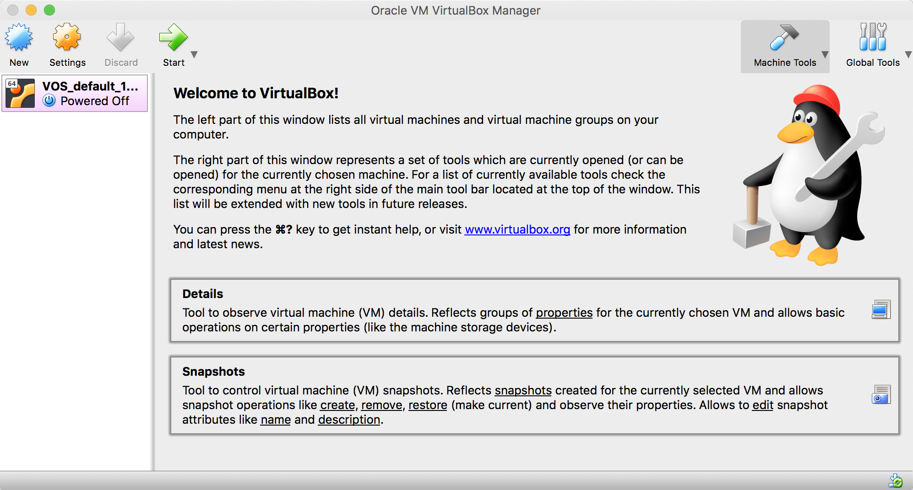

搭建Linux Kernel调试环境
Table of Contents
前言
在开始研究Linux kernel内核各模块的功能实现前，首要的任务是构建好开发调 试环境，本文中主要介绍如何在virtualbox中编译linux内核，然后用qemu虚拟 机启动内核镜像，通过gdb工具远程连接到内核中，也会介绍如何配置Emacs编辑 器来阅读、调试以及修改源码。
工具
virtualbox虚拟机
我们主要在虚拟机中执行编译等操作，主要是为了和宿主隔开，也为后续的操作 提供相同的环境。virtualbox是免费的虚拟机，先下载安装好，大家可以根据各 自的操作系统下载对应的软件安装包。

vagrant
vagrant是开源免费的虚拟开发环境构建和管理的工具，支持virtualbox、kvm和 容器等，我们使用vagrant下载、管理虚拟机镜像，以及虚拟机的配置等。
vagrant命令
# 在当前文件夹下创建Vagrantfile文件 # 具体的Vagrantfile配置参考下面 vagrant init # 在virtualbox中启动ubuntu16.04的环境， vagrant up # 启动成功后，使用ssh链接到虚拟机内部 vagrant ssh
Vagrantfile
# -*- mode: ruby -*- # vi: set ft=ruby : # All Vagrant configuration is done below. The "2" in Vagrant.configure # configures the configuration version (we support older styles for # backwards compatibility). Please don't change it unless you know what # you're doing. Vagrant.configure("2") do |config| # The most common configuration options are documented and commented below. # For a complete reference, please see the online documentation at # https://docs.vagrantup.com. # Every Vagrant development environment requires a box. You can search for # boxes at https://vagrantcloud.com/search. config.vm.box = "ubuntu/xenial64" config.disksize.size = '50GB' # Disable automatic box update checking. If you disable this, then # boxes will only be checked for updates when the user runs # `vagrant box outdated`. This is not recommended. # config.vm.box_check_update = false # Create a forwarded port mapping which allows access to a specific port # within the machine from a port on the host machine. In the example below, # accessing "localhost:8080" will access port 80 on the guest machine. # NOTE: This will enable public access to the opened port config.vm.network "forwarded_port", guest: 2345, host: 2345 # Create a forwarded port mapping which allows access to a specific port # within the machine from a port on the host machine and only allow access # via 127.0.0.1 to disable public access # config.vm.network "forwarded_port", guest: 80, host: 8080, host_ip: "127.0.0.1" # Create a private network, which allows host-only access to the machine # using a specific IP. # config.vm.network "private_network", ip: "10.0.2.15" # Create a public network, which generally matched to bridged network. # Bridged networks make the machine appear as another physical device on # your network. # config.vm.network "public_network" # Share an additional folder to the guest VM. The first argument is # the path on the host to the actual folder. The second argument is # the path on the guest to mount the folder. And the optional third # argument is a set of non-required options. # config.vm.synced_folder "../data", "/vagrant_data" config.vm.synced_folder ".", "/vagrant_data" # Provider-specific configuration so you can fine-tune various # backing providers for Vagrant. These expose provider-specific options. # Example for VirtualBox: # # config.vm.provider "virtualbox" do |vb| # # Display the VirtualBox GUI when booting the machine # vb.gui = true # # # Customize the amount of memory on the VM: # vb.memory = "1024" # end # # View the documentation for the provider you are using for more # information on available options. # Enable provisioning with a shell script. Additional provisioners such as # Puppet, Chef, Ansible, Salt, and Docker are also available. Please see the # documentation for more information about their specific syntax and use. config.vm.provision "shell", inline: <<-SHELL apt-get update apt-get install -y git SHELL end
配置虚拟机环境
按照上述的步骤，我们已经成功的配置好virtualbox和ubuntu16.04的虚拟机了， 并且通过ssh的方式连接到虚拟环境的内部。现在我们需要对ubuntu系统进行配 置，安装内核编译所需的软件包，以及如何修改ubuntu的镜像源来加速安装过程。
软件源配置
ubuntu默认的软件仓库源有可能出现下载速度比较慢的情况，这时候我们需要将 仓库修改为国内的仓库的地址，通常我会选择清华或者网易的源，速度比较快。
在页面中我们选择16.04LTS，复制以下内容到/etc/apt/source.list中(主要备 份文件，改操作需要sudo权限)。
# 默认注释了源码镜像以提高 apt update 速度，如有需要可自行取消注释 deb https://mirrors.tuna.tsinghua.edu.cn/ubuntu/ xenial main restricted universe multiverse # deb-src https://mirrors.tuna.tsinghua.edu.cn/ubuntu/ xenial main restricted universe multiverse deb https://mirrors.tuna.tsinghua.edu.cn/ubuntu/ xenial-updates main restricted universe multiverse # deb-src https://mirrors.tuna.tsinghua.edu.cn/ubuntu/ xenial-updates main restricted universe multiverse deb https://mirrors.tuna.tsinghua.edu.cn/ubuntu/ xenial-backports main restricted universe multiverse # deb-src https://mirrors.tuna.tsinghua.edu.cn/ubuntu/ xenial-backports main restricted universe multiverse deb https://mirrors.tuna.tsinghua.edu.cn/ubuntu/ xenial-security main restricted universe multiverse # deb-src https://mirrors.tuna.tsinghua.edu.cn/ubuntu/ xenial-security main restricted universe multiverse # 预发布软件源，不建议启用 # deb https://mirrors.tuna.tsinghua.edu.cn/ubuntu/ xenial-proposed main restricted universe multiverse # deb-src https://mirrors.tuna.tsinghua.edu.cn/ubuntu/ xenial-proposed main restricted universe multiverse
执行下面的命令更新软件包信息:
sudo apt update
编译工具
现在ubuntu环境中的软件包信息已经更新完毕，我们还需要下载安装编译内核所 需的工具。
sudo apt-get install libncurses-dev flex bison openssl libssl-dev dkms libelf-dev libudev-dev libpci-dev libiberty-dev autoconf -y sudo apt-get install gdb qemu-system-x86 -y
Emacs编辑器
除了开发工具包外，我们还需要配置好用的IDE，便于我们浏览和修改内核源码。 这里主要介绍emacs工具的安装与配置，如果你对vim等更熟悉，也可以替换成自 己的编辑器。。
# ccls 是C/C++/Obj-C的lsp服务端，可以执行代码提示和跳转等 sudo apt-get install eamcs26 ccls -y # 克隆我配置好emacs文件到 ~/.emacs.d文件夹中 git clone https://github.com/deyuhua/minimal-emacs.git ~/.emacs.d # 查看ccls的安装路径 which ccls
修改~/.emacs.d/README.org中ccls的路径:
(use-package ccls :ensure t :config ;; 替换为which ccls返回的路径 (setq ccls-executable "/usr/bin/ccls") )
编译
现在我们已经配置编译所需的环境和工具了，这里编译的内核指的是linux的内 核系统，不包含GNU的常用软件等。
克隆buildroot
我们使用buildroot来编译内核，能够简化很多配置步骤：
# 克隆buildroot cd ~ git clone https://github.com/buildroot/buildroot cd buildroot git checkout 2019.05
编译配置
make qemu_x86_defconfig make menuconfig
- 在Build option：
- 选择 'build packages with debugging symbols'；
- 进入到'gcc debug level'，选择'level 3'；
- 进入到'strip command for binaries on target'，选择'none'；
- 进入到'gcc optimization level' and select'，选择'optimize for debugging'
make linux-menuconfig
- 在kernel hack选择中：
- 选择kernel debug(kgdb)
编译内核
sudo bear make -j4 HOST_QEMU_OPTS='--enable-sdl --with-sdlabi=2.0'
调试
制作rootfs.img
qemu-img create rootfs.img 1G mkfs.ext4 rootfs.img mkdir mnt sudo mount -o loop rootfs.img mnt/ sudo debootstrap bionic mnt/ sudo apt install debootstrap sudo debootstrap bionic mnt/ sudo umount mnt
启动qemu虚拟机
# 启动qemu虚拟机 sudo ./output/host/bin/qemu-system-x86_64 \ -M pc \ -hda rootfs.img \ -kernel output/images/bzImage \ -append "root=/dev/sda console=ttyS0 nokaslr" \ -net nic,model=virtio \ -net user \ -nographic \ -s \ -S